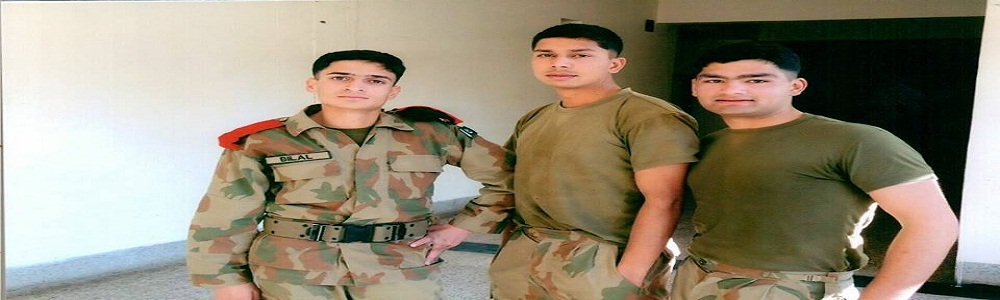
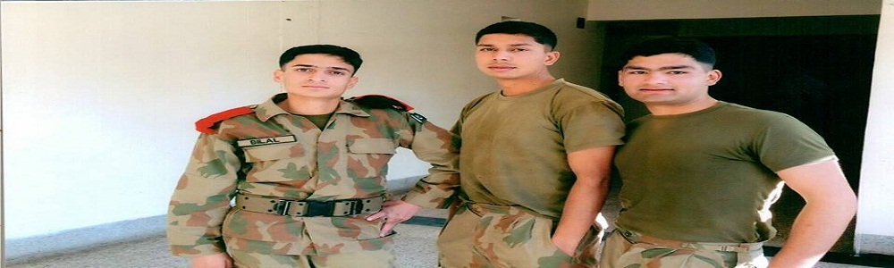

CAPTIAN AKASH RABBANI (SHAHEED)
Captain Akash Rabbani, who was killed by militants in Mirali, was laid to rest with full military honour
in his ancestral graveyard in Habibullah Colony near PMA Kakul, Abbottabad.
The funeral prayers of the 25-year-old SSG officer were attended by high ranking army officers,
relatives and people from all walks of life at Frontier Force Regiment Centre Ground.
Capt Akash was killed in exchange of fire with militants in the ongoing military operation Zarb-i-Azb in Mirali
tehsil of North Waziristan Agency on Tuesday.
Capt Akash, was born on 20th October 1990. He was very sharp and intelligent since childhood.
His elder brother, Dr Danish is doing house job in Ayub Medical College, whereas younger sister is a student
of 2nd year in the same college. Dr Aftab, the head of medicines department in Ayub Medical Complex Abbottabad,
told that his father was inspired by Allama Iqbal therefore, when Akash was born, he was given this name
keeping in view the depth and universality coupled with a sweet sense . Following the foot prints of his family,
Kashi (nick of Akash) also scored high marks in Matriculation and FSc and had a chance to easily clinch a seat
in a medical college to become a doctor. But, he was destined to bring laurels for his parents, and the country,
in a unique way therefore profession of arms turned his ultimate passion into his destiny.
His performance was remarkable in PMA and he was commissioned on 19 April 2011 in 47 Field Artillery,
which was stationed at Kharian. His performance remained outstanding during his basic course,
but his motivation took him to Special Services Group (SSG) to pursue his carrier. He joined SSG
in 2013 and after successful training, he joined 4 Commando at Tarbela.
His unit was tasked to spearhead operation Zarb- e- Azb in North Waziristan Agency.
Dr Rabbani says "Akash has become my introduction and identity, wherever I go,"
"Akash Rabbani studied at Abbottabad Public School. He was a brilliant student throughout his academic carrier,"
According to his father; He said Akash wanted to do something for his motherland.
Recalling the last two months of his son’s life, Dr Rabbani said that he had invited the family members
at different functions held at his unit and was very happy from his job. He said that his son always used to say that
he was enjoying his service with full professional zeal.
Dr Rabbani said that his son was young and energetic. It was just beginning of his life, he added.
"We all family members had many dreams for him but the honour he received is something different."
Dr Rabbani said that they were proud of him and his success. "Akash told us about his first major success in Miramshah
when security forces traced a training centre of suicide bombers."
Dr Rabbani said that his son wanted to bring peace to the country and free the country from the militants.
"The day is not far when efforts and sacrifices rendered by the sons of soil like Akash will bear fruits and Pakistan
will be put on the path of progress and development."
Capt Akash was nephew of DIG Nisar Tanoli, EDO Dr Javed Tanoli and former nazim Shaukat Tanoli.
He was the younger brother of Dr Danish Rabbni.
Marka was the last place known as the most notorious hideout of the terrorists in the city and Rabbani's Battalion
was given responsibility to clear the area.
On 15th July, in Boya Degan (Mirali), Capt Rabbani was assigned a mission to clear off area from the terrorists.
In completion of the assigned tasks, he led his men from the front and in due course, embraced shahadat
while fighting fearlessly against the ferocious terrorists. He undoubtedly wrote a glorious chapter of Zarb-e-Azb
with his blood and left lasting impression for others to follow.
Later a floral wreaths ob the behalf of President of Pakistan, Prime Minister, COAS and his unit were laid on his grave.
Later, flower wreaths on behalf of President of Pakistan, Prime Minister and
Chief of army staff has been laid on his ultimate rest place.
 

.png "Google")
.jpg "Youtube")

.jpg "Twitter")